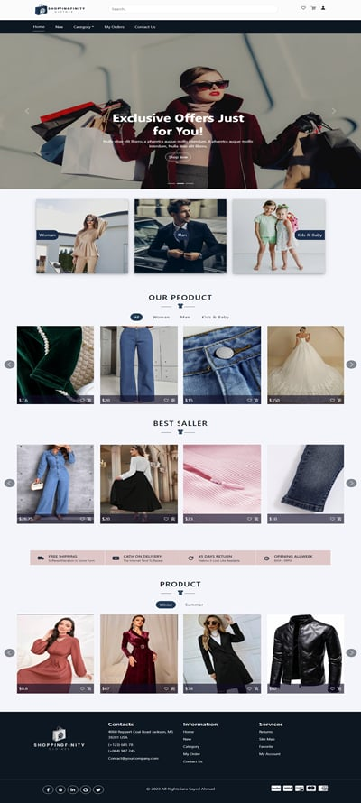

Projects
-
Bootstrap Projects
-
Chef üçΩÔ∏è
A website that displays restaurants according to the area chosen by the user, displays the food in each restaurant, and the user can order from the website
-
Photography üì∏
A site that features professional photographers, shows some pictures of their work, prices, and how to contact them for booking.
-
-
Knowledge Management System (KMS) üë©‚Äçüíª
is a system that helps in managing people, process, content, and strategy. It stores and return information possessed by an organization and its staff. This knowledge is created by reporting employees’ previous experiences, in addition to new gained experience.
-
Online Shopping (System and Website) üõçÔ∏èüõí
-
System :
It is a system designed to display sales statistics, the number of users and products on the website, and other essential statistics required by the administrator. The system also highlights the administrator's capabilities, such as adding and modifying products, among other functions. Additionally, it provides an overview of all orders, product ratings, and the complete list of users on the site

-
Website:
A website that enables users to shop online, featuring a wide range of clothing products for all categories—children, women, and men. Users can add their favorite products to a wishlist, place products in their carts, and view recently added items.

-
Also, there is a set of projects that I Programmed in the company where I trained.